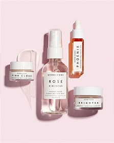

In 1979,Soft&Shine was founded by Alfred Pennysworth in London,United
Kingdom.Starting from hair care products with natural ingredients,Soft&Shine
continues to grow and begin to wrestle the world of skin care. Soft&Shine believes
that nature has provided the best self-care solutions, so that Soft&Shine products
always use natural ingredients.
Mission

Soft&Shine's commitment
Please fill out the given form to help us make a better website for our users
based on your experience and choice of products.Thank You.